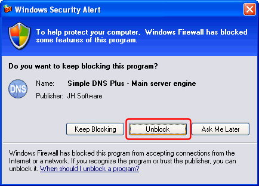
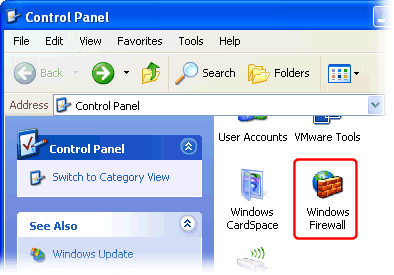
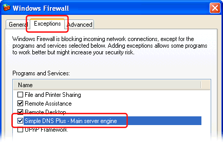

The firewall built into Windows XP (Service Pack 2 and later) monitors incoming network traffic by application.
Simple DNS Plus v. 5.0 automatically adds an exception (rule) to Windows Firewall when the software is installed and should be able to communicate over the Internet without any prompts from Windows Firewall.
Simple DNS Plus v. 4.00 and earlier will cause the Windows Firewall Security Alert prompt almost immediately after you start the software:

Click the "Unblock" button to allow Simple DNS Plus to receive traffic from the Internet.
You can confirm and/or edit the firewall settings as follows.
First Double click the "Windows Firewall" icon in the Control Panel:
(Click "Switch to Classic View" if it doesn't look like this)

Select the "Exceptions" tab:
